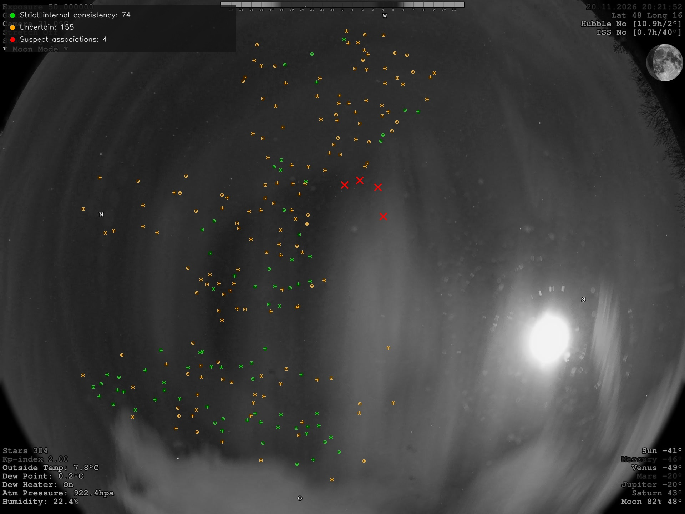
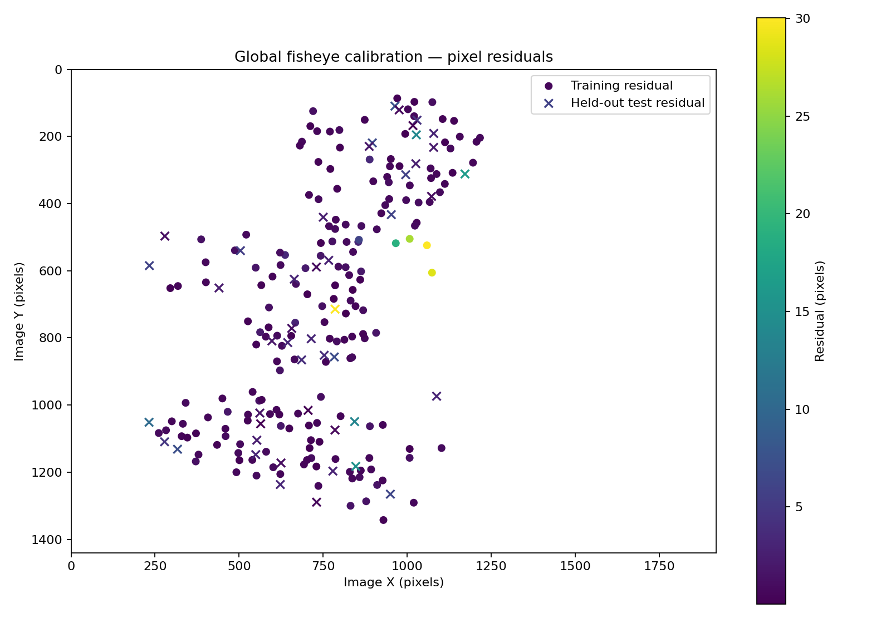
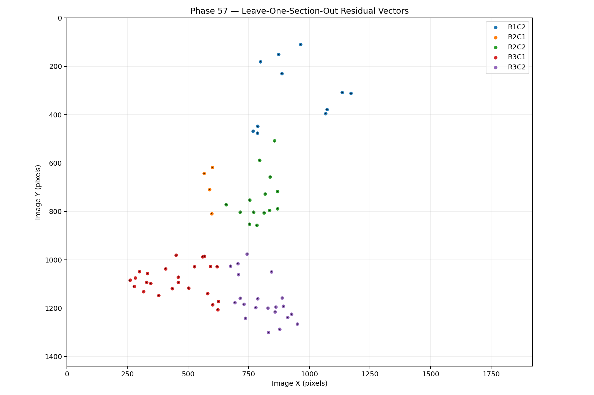
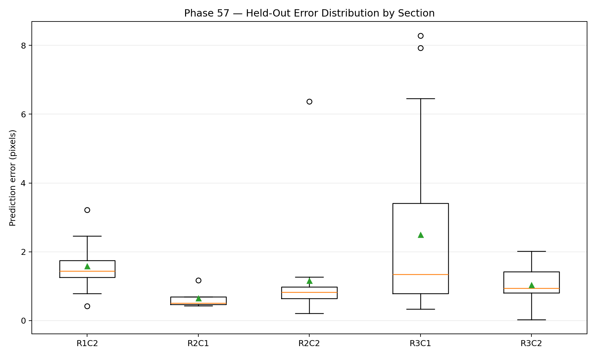
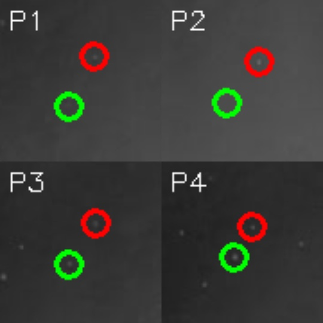
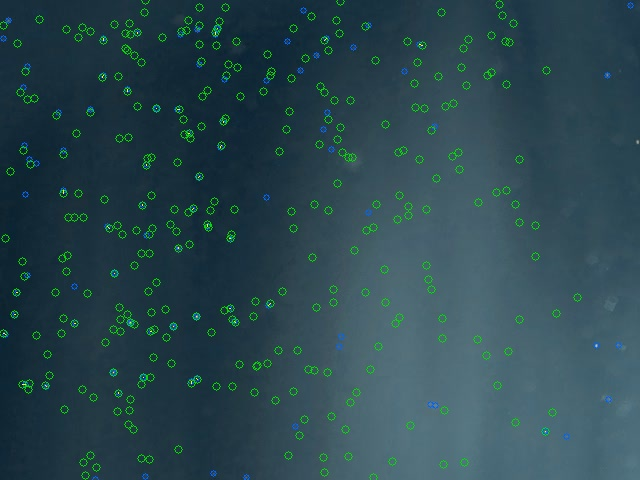

Phase 62 — Integrated Star Tracker Demonstration
A combined view of the controlled synthetic pipeline and the ASK033 real-camera research experiment.

research/real_image/results/ASK033/phase61_final_association_visualisation/phase61_real_star_association_overlay.jpg

research/real_image/results/ASK033/phase38_global_calibration/phase38_residual_map.png

research/real_image/results/ASK033/phase58_section_error_diagnostics/phase58_spatial_residual_vectors.png

research/real_image/results/ASK033/phase58_section_error_diagnostics/phase58_section_error_distribution.png

research/real_image/results/ASK033/phase52_global_prediction_test/phase52_four_point_montage.jpg

research/real_image/results/ASK033/phase35_wcs_match_overlay.jpg
Phase 38 and Phase 56 produced exploratory global fisheye estimates. The Phase 56 held-out RMSE was 0.9381 px on 15 points. Leave-one-section-out validation across 74 points produced a 2.3247 px RMSE, with R3C1 the weakest section at 3.460 px.
This demonstration reads existing reports and assets only. No earlier phase was rerun and no calibration parameters were modified.
See phase62_integrated_demo.md and
phase62_integrated_demo_report.json in this folder.